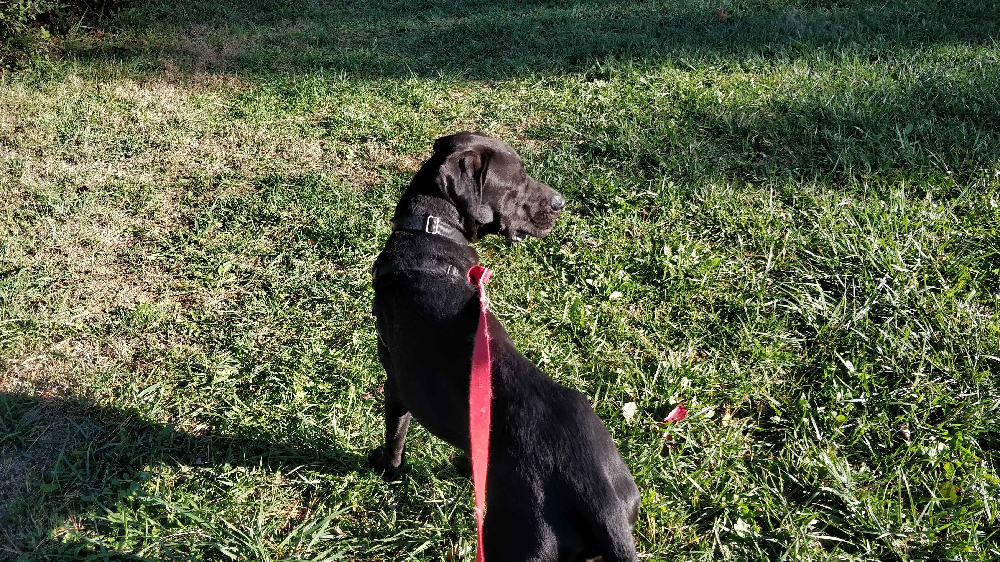
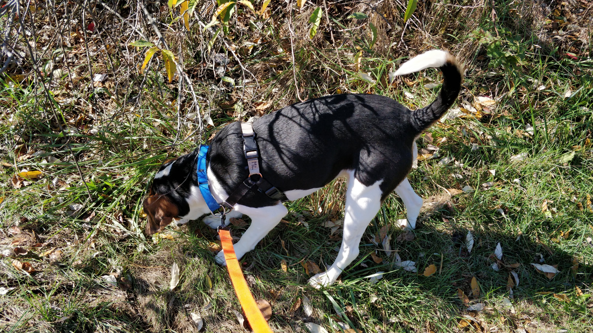
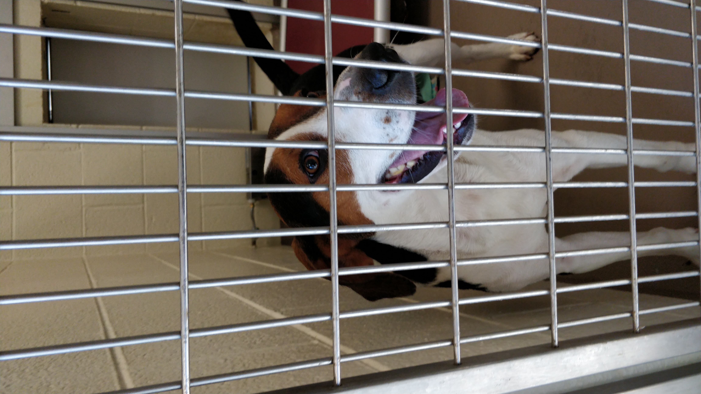

I volunteer at the Christiansburg Animal Care and Adoption Center. There are lots of dogs living
there that haven't been fortunate enough to be adopted just yet. As a volunteer, I get to come
to the ACAC and walk these dogs around the shelter and the nearby park.

(Images courtesy of The Collegiate Times and Companion Animal Clinic, respectively.)
In an effort to gives the ACAC (and the dogs I've walked) some publicity, I've created this page
to talk about all the different dogs I've walked.
Meet the Dogs
Here are the dogs I've walked. I usually try to get some pictures of each dog, so you can put a
face to a name.
Dexter



Dexter is a black lab. He was the first dog I walked at the ACAC, and he's a really sweet dog.
He's pretty large too, as most labs are. His size and demeanor might be intimidating, but don't
be fooled - I've walked him multiple times and he's never been aggressive or defensive.
When I took Dexter out for a walk, he was a bit of a leash-puller, but he listened to me (maybe
not my words, but he atleast responded to my tugs) and was very obedient. He also really enjoyed
running! Like most dogs, he took in just about any smell he could sense, and would occasionally
dart back and forth, trying to decide on what to explore next.
Overall, he was a great dog to get to know. It seems like he'd make a great family dog.
Old Joe



Old Joe is a hound. Even though his name suggests it, he's doesn't seem as old as you might
think. When I unlocked his cage to put his collar and leash on, he was barking like crazy and
jumped all over me in excitement. After quite a few minutes of attempting to get the collar
around his neck (this included him launching the collar off his nose straight into hi water
bowl), I was finally able to get down to business to taking him for a stroll.
Outside his kennel, Joe's excitement never died down. In fact, it seemed to get stronger. He
would beeline to anything interesting he saw or smelled, pulling me along for the ride. This made
the walk a little more difficult than others, but Joe would still listen to my tugs on the leash.
Getting some decent pictures of Old Joe was challenging, considering his short span of attention,
but I managed to get a few. Overall, he was very pleasant to walk and spend some time with. Like
most dogs there, poor Joe didn't really want to get back in his cage. He actually ran away from me
to the outdoor section of his cage (through a doggy door) before I could get his collar and
harness off, which was pretty funny.
I hope Old Joe gets a loving family. Despite his sporadic attention span, he was very sweet and
would make a great friend.